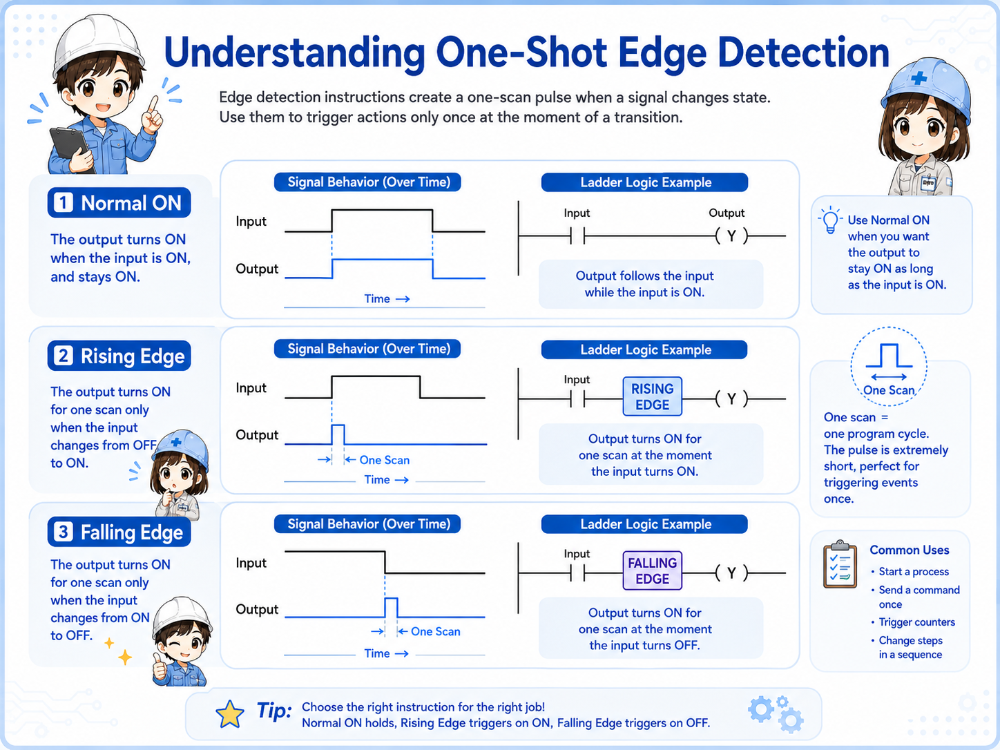
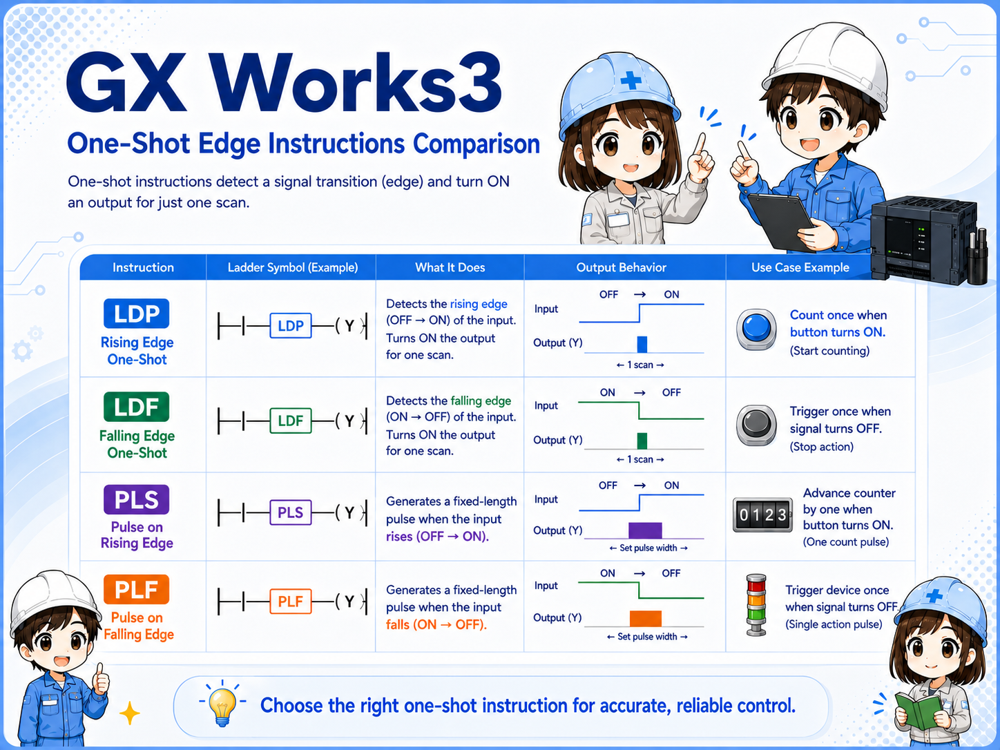
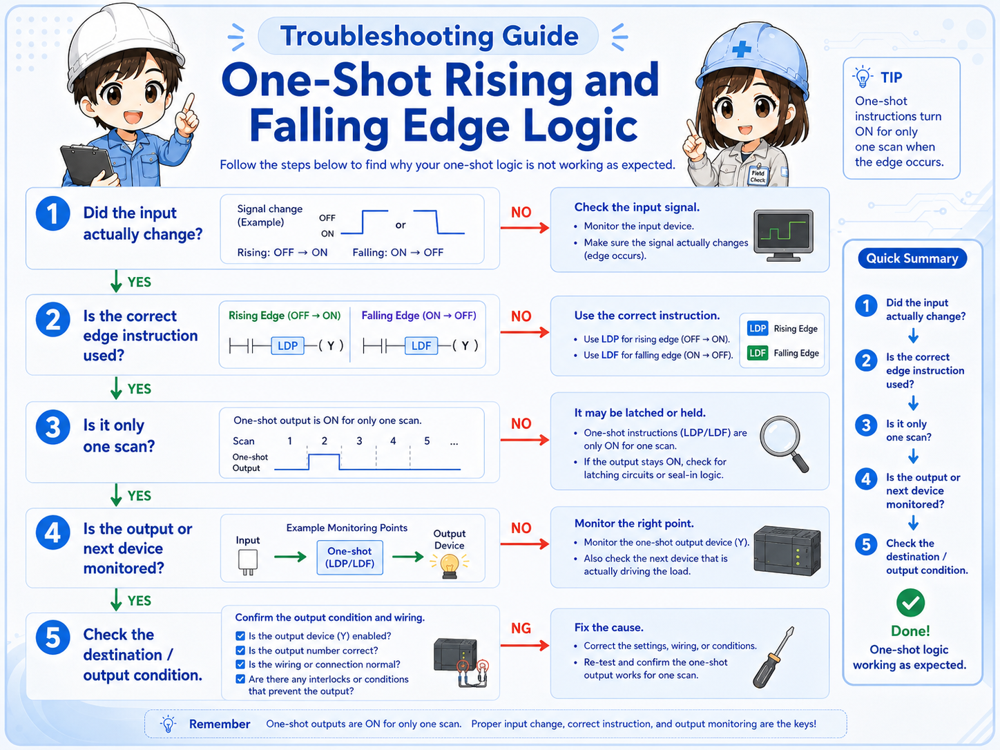
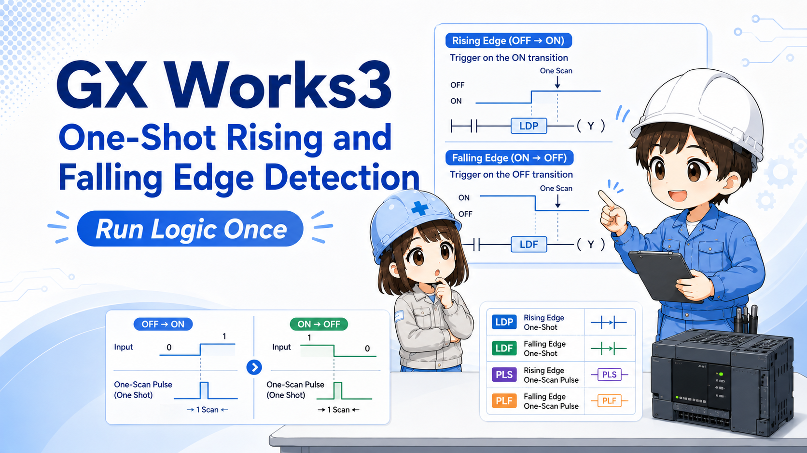

1. What is one-shot rising and falling edge detection?
Think of one-shot logic as “detect the moment a signal changes, then run only once.”
In ladder programs, a normal contact may stay ON for many scans. If you use that condition directly, a counter, calculation, SET/RST, or other action may execute repeatedly while the condition remains true.
One-shot rising and falling edge detection helps avoid that. It detects a moment of change instead of a continuous ON state.


When a signal stays ON, normal logic may keep executing. One-shot logic focuses on the instant of change.

So if I want a counter to count only once when a button turns ON, I should think about edge detection.
2. Quick conclusion: detect the change, not just the state
The important difference is whether you are watching a continuous state or the moment it changes.
A normal ON condition can remain true for many scans. Rising-edge detection focuses on OFF → ON. Falling-edge detection focuses on ON → OFF. One-shot logic then lets the related action run for only a short scan-based moment.
Signal state
The input or internal bit changes.
Edge detection
Rising or falling edge is detected.
One-shot action
The target logic runs once.
Check official manuals for exact details
Instruction names, contact symbols, and pulse behavior can depend on CPU series and instruction format. Use this article as a beginner guide, and check the official Mitsubishi Electric manual or GX Works3 help for actual design work.
3. Rising edge detection: OFF → ON
Rising edge detection is used when you want to react to the moment a signal turns ON.
In beginner terms, a rising edge is the moment a signal changes from OFF to ON. In GX Works3-style ladder reading, instructions or contacts such as LDP are commonly associated with rising-edge detection.
For example, if a push button is held ON for one second, a normal contact may stay ON for many scans. A rising-edge condition is used when you want the related action to run only at the moment the button turns ON.
Field reading point
If a counter increments too many times while a button or sensor remains ON, check whether the program is using normal ON logic instead of rising-edge one-shot logic.
4. Falling edge detection: ON → OFF
Falling edge detection is used when you want to react to the moment a signal turns OFF.
A falling edge is the moment a signal changes from ON to OFF. In GX Works3-style ladder reading, instructions or contacts such as LDF are commonly associated with falling-edge detection.
This is useful when the end of a signal matters. For example, you may want to process a result when a sensor turns OFF, or trigger a reset when an operation signal drops.
Do not mix the timing
Rising edge and falling edge are opposite timing points. If the action happens one step too early or too late, check whether the program is detecting the correct edge.
5. PLS / PLF and one-scan pulse output
PLS and PLF are often discussed when you want an internal bit to turn ON for one scan.
Beginner explanations often connect PLS with a rising-edge style pulse and PLF with a falling-edge style pulse. The practical idea is to create a short one-scan signal that can be used by the next part of the ladder program.

| Idea | Beginner reading | Field check |
|---|---|---|
| Rising edge | Detects OFF → ON. | Good for “count once when signal turns ON.” |
| Falling edge | Detects ON → OFF. | Good for “act once when signal turns OFF.” |
| Pulse output | Creates a short one-scan signal. | Check where the pulse bit is used later. |
6. Common field use cases
One-shot logic is often used when repeated execution would cause trouble.
- Counting a sensor detection only once.
- Adding or subtracting a value only once per button press.
- Setting an internal flag when a signal first turns ON.
- Resetting a sequence when an operation signal turns OFF.
- Starting a one-time process when a condition changes.
- Preventing repeated operation while a button is held down.
Connected article flow
ADD/SUB, counters, and SET/RST often need one-shot logic when you want “one action per event” instead of “action every scan while ON.”
7. Why scan timing matters
One-shot logic is closely tied to PLC scan behavior.
A PLC program repeats its scan. If a condition is true, the related logic may be evaluated again and again. One-shot logic is a way to limit an action to a scan-based moment rather than a long continuous condition.
When troubleshooting, do not only check whether the input is ON. Check when it changed, where the one-shot signal is created, and where that signal is used.
Common failure pattern
A push button is intended to add 1 once, but the value increases many times while the button is held ON. This often means the program is using a continuous ON condition where edge detection is needed.
8. Combining one-shot logic with counters and SET/RST
Counters, SET/RST, and arithmetic instructions are common places to check one-shot behavior.
One-shot logic is especially useful when a later instruction should respond to an event once. Counters may need a one-shot input to prevent repeated counting. ADD/SUB may need one-shot logic to avoid repeated value changes. SET/RST may need careful timing so that flags are not set or reset unexpectedly.
Counter input
Check whether the count signal is continuous or one-shot.
SET / RST
Check whether the flag is latched and reset at the intended timing.
Arithmetic
Check whether ADD/SUB runs once or every scan.
Pulse bit reuse
Search where the one-shot bit is used later in the program.
9. Field check points when one-shot logic does not work
Check the signal change, edge type, pulse bit, and destination action in order.
- Confirm whether the original signal actually changes from OFF to ON or ON to OFF.
- Check whether the program should use rising edge or falling edge.
- Check whether a pulse bit is created and where it is used.
- Monitor the target action, such as counter input, ADD/SUB, SET, or RST.
- Search for another rung that overwrites or resets the same internal bit.
- Check whether the action is triggered every scan instead of once.
- Review the official manual or GX Works3 help before changing instruction variants.

10. GX Works3 monitoring points
Monitor before, during, and after the one-shot point.
When monitoring one-shot logic, watch the original signal, the edge or pulse signal, and the target instruction together. If you only watch the final result, it may be difficult to see whether the pulse happened for one scan.
Three-point monitoring
Watch original signal, edge/pulse bit, and target action together. This makes it easier to tell whether the problem is before or after the one-shot logic.
11. Common beginner mistakes
Most mistakes come from confusing continuous ON with one-time execution.
- Using normal ON logic: The action repeats while the condition remains true.
- Choosing the wrong edge: Rising edge and falling edge happen at different timing points.
- Forgetting where the pulse bit is used: A one-shot signal is only useful if the later rung uses it correctly.
- Expecting to see the pulse easily: A one-scan signal may be hard to catch during monitoring.
- Missing overwrites: Another rung may reset or overwrite the same internal bit.
- Skipping official references: Instruction details should be confirmed for the target CPU series.
12. Summary
One-shot rising and falling edge detection is a basic but important idea in GX Works3 ladder programming. Rising edge focuses on OFF → ON, falling edge focuses on ON → OFF, and pulse-style logic helps run an action for one scan.
If you understand this flow, counters, ADD/SUB, SET/RST, push buttons, sensors, and sequence triggers become easier to troubleshoot.

Related articles
These articles connect naturally with one-shot rising and falling edge detection.